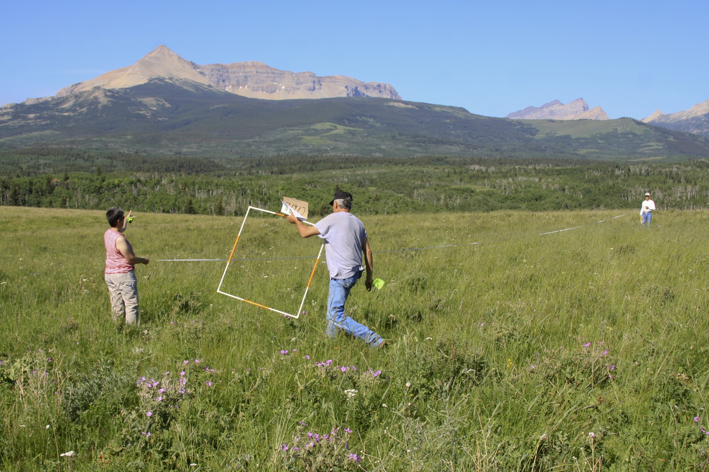

The directory/Blackfeet Tribe of the Blackfeet Indian Reservation of Montana

Blackfeet Tribal conservation work, 2012USDA NRCS, 2012; NRCS Montana Flickr image 37949970275 / Wikimedia Commons. Public domain in the United States.
Named Tribal government · Added to the original list
Blackfeet Tribe of the Blackfeet Indian Reservation of Montana
The Blackfeet Tribe of the Blackfeet Indian Reservation of Montana is the government centered on the Montana Blackfeet community. The Nation's public cultural account identifies its United States members primarily with South Piegan ancestry, while naming related North Piegan, Blood and Siksika communities. Those relationships connect peoples across the international border; they do not turn this government into the whole Blackfoot Confederacy. The same account describes continuing land relationships and the North American Indian Days and Heart Butte celebrations. A second community publication explains the long water-compact process and the April 2017 tribal vote. Together, these sources introduce cultural continuity and a specific exercise of collective government. The guide attributes their histories and positions to the Nation, omits population and water-volume totals, and leaves original legal instruments and later implementation for further reading. It is a starting route into the Montana government's own public explanations, with broader histories and community voices still to add.
See each region’s evidence for historical or present-day scope.
Homeland / region
Montana
Research depth
Source guide
Source collection
2 annotated resources · 2 Indigenous-led
Inspected sources
2 substantive works · selected content reviewed
Initial adequacy
Still unfinished
Source review
October 27, 2026
Names & relationshipsThis outline keeps the individually listed government name findable. Similar words in another entry do not establish that its people, institutions or membership are identical. Detailed relationships and historical coverage are queued.
A source guide for a deeper dive.This entry provides a brief orientation and an organized reading path. A comprehensive deep dive has not yet been completed. Follow the annotated sources and distinguish primary community accounts from outside reference material.
Still unfinished
A small actual-content collection supports a useful introduction to this named government, with explicit historical, access and interpretation limits. It is not comprehensive research or community endorsement.
Assessment recorded October 27, 2026. This is separate from research completion and community review.
Add Montana Blackfeet-authored histories, family voices, language work and arts beyond these concise institutional pages.
Read original compact instruments and later implementation before stating present legal rules or outcomes.
Compare treaty, reservation and land histories with underlying records; this government is distinct from the wider Confederacy.
Backdrop photographs & credits
These photographs have individual, documented connections to this entry. Their captions and source records define the people, place, object, and period shown; no one photograph represents every community within a broader label.
Blackfeet Tribal conservation work, 2012 USDA NRCS, 2012; NRCS Montana Flickr image 37949970275 / Wikimedia Commons. Public domain in the United States.
The NRCS caption specifically identifies Anne Stephens as Blackfeet Tribal Conservationist and names producers Gus Vaile and Lester Gray placing a range-monitoring square on the Blackfeet Reservation. This supplies an individually scoped institutional and place connection to the Montana government. It does not establish the citizenship of every participant or represent all Blackfeet or the whole Confederacy. The photograph documents a particular 2012 activity; present land conditions, ecological outcomes and personal viewpoints are not inferred. The full 3456-by-2304 source frame is preserved unchanged, displayed at 1920-by-1280 by view_image. Complete available 3456×2304 source frame proportionally resized to 1800×1200 and JPEG recompressed; no pixel crop or retouching. Source file preserved privately. CSS crops/overlays affect display only; creator/source/rights credit retained.
Image, association, and reuse record reviewed 2026-10-27.
Full photographs are displayed proportionally above. A translucent background copy may be cropped by the viewport; it does not replace the complete image or its record.
The visual treatment does not change the research status, evidence, or remaining gaps recorded in this profile.
Start reading here
Named government route; broader people-level names and related governments remain distinct. Source dates, inspection scope and remaining gaps are retained.
A concise community-authored cultural orientation that specifically distinguishes the United States Blackfeet community within wider related peoples. Its ancient chronology is not independently evaluated; no cultural media are reused.
The Nation explains its own water-compact campaign and a dated tribal vote. Its jurisdiction and rights wording is an institutional legal/political position; this review does not independently establish current enforceability, water quantities or project implementation.
These are selected starting points. The full annotated collection, source perspectives, inspection limits and remaining research questions follow below. A starting guide is not an exhaustive history or community endorsement.
01
A particular Montana government
The Nation identifies its United States community primarily with the South Piegan, alongside related northern communities. Its own naming account supplies the distinction used here. The profile does not assign every Blackfoot person to the Montana government or treat an international cultural relationship as a single citizenship system.
The cultural account names continuing celebrations and relationships to land. The water page records a community vote in April 2017 after decades of negotiations. Read that dated public explanation as the Nation presenting a consequential decision, then consult the underlying compact and later records for detailed legal or implementation questions.
Add Montana Blackfeet-authored histories, family voices, language work and arts beyond these concise institutional pages.
Read original compact instruments and later implementation before stating present legal rules or outcomes.
Compare treaty, reservation and land histories with underlying records; this government is distinct from the wider Confederacy.
This reviewed starting guide records selected actual-content sources, their perspectives and access limits. Reused earlier reviews retain their original dates/scopes; images and repeated URLs do not create new historical works. Comprehensive history and community review remain open.
Follow the reading path
Sources & further reading
Open any title to read the original source. Annotations explain what each link can help you explore.
No Indigenous-led source is identified in this entry yet. This is a gap in this collection, and does not imply an absence of community knowledge or organization.
A concise community-authored cultural orientation that specifically distinguishes the United States Blackfeet community within wider related peoples. Its ancient chronology is not independently evaluated; no cultural media are reused.
Inspection: Content reviewed for the stated scope
Scope: Actual complete public text, lines 6–7, read: related bands, South Piegan connection, land use and named annual celebrations. Images, stories, carousel media and precise ancient chronology not evaluated.
The Nation explains its own water-compact campaign and a dated tribal vote. Its jurisdiction and rights wording is an institutional legal/political position; this review does not independently establish current enforceability, water quantities or project implementation.
Inspection: Content reviewed for the stated scope
Scope: Actual public body lines 2–17 read, including the April 20, 2017 vote, community explanation of the agreement and public-information purpose. Chronology, FAQs, maps, legislation and resource links not opened.